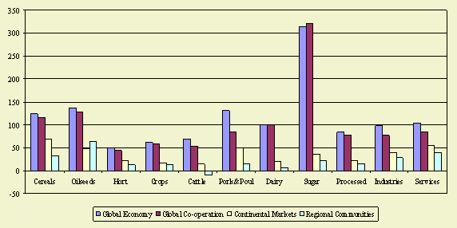
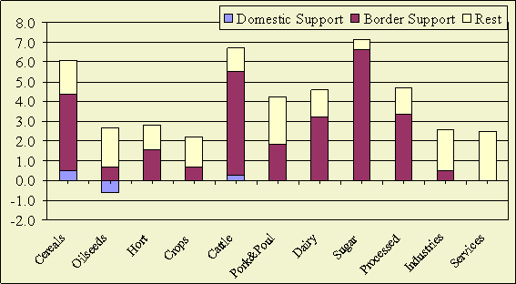

World trade growth increases in all scenarios, especially in the global
scenarios (Global Economy and Global Cooperation). The difference in world trade growth between liberalisation
scenario's and non liberalisation scenarios is striking. The higher growth in
the liberalisation scenarios is caused by the higher income growth and the impact
of liberalisation itself.
The reduction of border support in the Global economy contributes significantly
to the growth of world trade in cereals, beef, sugar and processed food.

Figure 1- World Trade, Growth in
%, 2001-2030
World trade growth increases in all scenarios, especially in the global scenarios
(Global Economy and Global Cooperation). The difference in world trade growth between liberalisation scenario's
and non liberalisation scenarios is striking. The higher growth in the liberalisation
scenarios is caused by the higher income growth and the impact of liberalisation
itself.
The reduction of border support in the Global economy contributes significantly
to the growth of world trade in grains, beef, processed food and especially
sugar. The impact of reduction of domestic support is limited.
The difference in world trade growth between liberalisation scenario's and non
liberalisation scenarios is striking. The higher growth in the liberalisation
scenarios is caused by the higher income growth and the impact of liberalisation
itself (see figure 1).
The growth in world trade is highest in sugar in the liberalization scenario
due to a very high level of initial protection. The growth is also high for
pork and poultry and oilseeds. The trend in trade that oilseeds trade is growing
faster than wheat and coarse grains is expected to continue. The main exporters
of oilseeds are Brazil and the USA and the main importers are located in Asia
(especially China).

Figure 2- Relative Contribution of Domestic and Border
Support to World Trade Growth in Scenario: Global Economy, annual growth rates,
2001-2030
The reduction of border support in the Global economy contributes significantly
to the growth of world trade in grains, beef, processed food and especially
sugar. The impact of reduction of domestic support is limited.
Explanation
The reduction of border support in the Global Economy scenario contributes significantly
to the growth of world trade in grains, beef, processed food and especially
sugar. The impact is limited for oilseeds, industries and services. For industries
this is caused by trade liberalisation in earlier WTO rounds (e.g. Uruguay round).
The impact of reduction of domestic support is very limited and slightly negative.
The impact is negative because the reduction of subsidies increases prices of
current exporters.